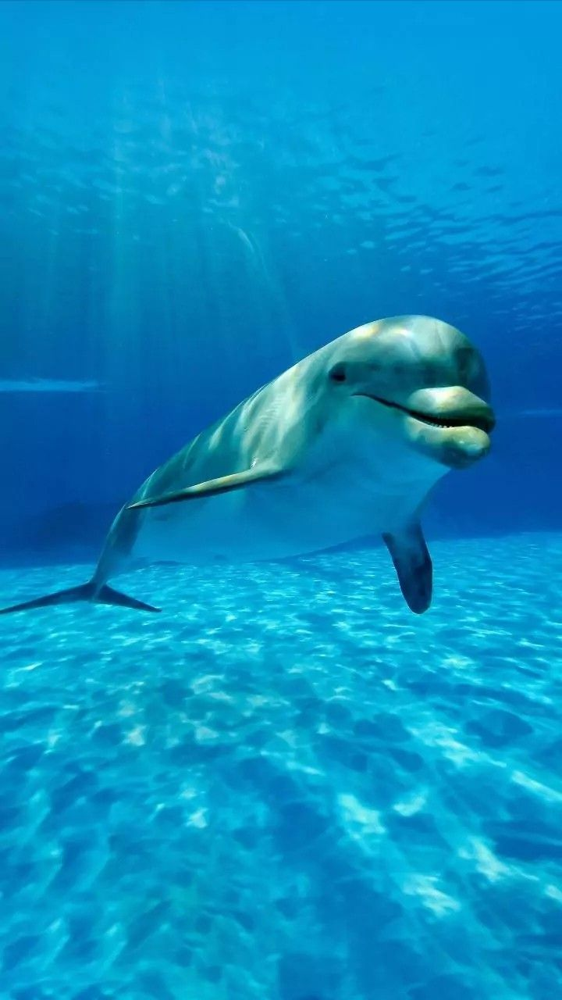

Aku Lumba

Sumber gambar: https://pin.it/6d4cYIt0z
Suara Lumba-lumba
Contoh sumber audio: YouTube Shorts
Sumber gambar: https://pin.it/6d4cYIt0z
Contoh sumber audio: YouTube Shorts
"Aku hewan laut yang cerdas dan ramah. Tubuhku licin, panjang, dan berwarna abu-abu. Aku punya sirip di punggung dan senyum manis di wajahku! Aku juga suka melompat dan berenang cepat di atas air."
"Aku suka makan ikan kecil dan cumi-cumi. Aku berburu bersama teman-temanku—kami bekerja sama seperti tim yang kompak!"
"Aku tinggal di laut yang hangat, dekat pantai atau di samudera luas. Kadang-kadang, aku juga muncul di atas air untuk bernapas, loh!"
"Aku bukan ikan, walaupun hidup di laut. Aku adalah mamalia laut seperti paus. Aku bernapas dengan paru-paru, menyusui anakku, dan bisa berkomunikasi dengan suara-suara khusus yang hanya dimengerti oleh sesama lumba-lumba."